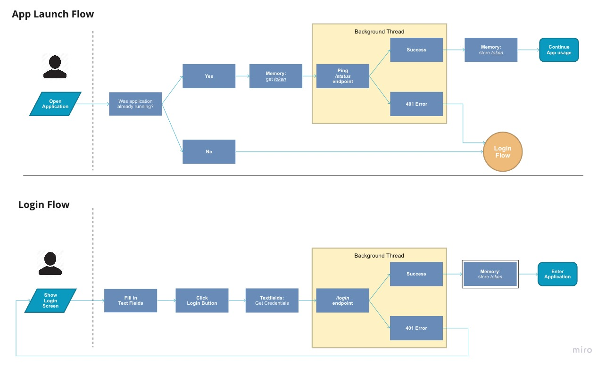
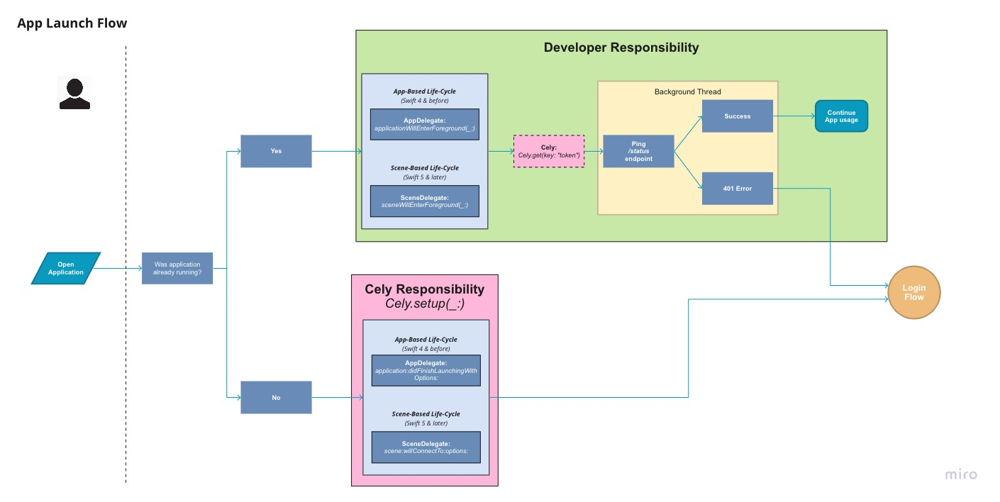
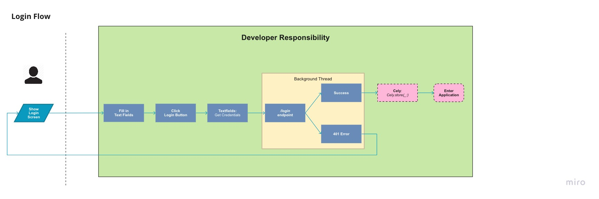

Introduction#
Loud Re-Authentication requires the user to re-authenticate everytime the application enters the foreground from a suspended or terminated state. In addition, it will require re-authentication once the user is no longer authenticated with the API.

Loud Re-Authentication with Cely#
In the next few sections were going to be going over Cely's role/responsibility in this flow and how to adopt it with your application.
App Launch Flow#

With the recent changes made to the App's Life Cycle, depending on what version of iOS your application will support, iOS 12 and earlier or iOS 13 and later — you will need to call Cely.setup(_:) in different parts of your app's codebase.
The rest of the guide will follow as if your application supports iOS 13 & later. In the next section we will shift our focus to scene(_:willConnectTo:options:)
Cely Responsibility#
// iOS 13 | Swift 5.0 | Xcode 11.0
import Cely
struct User: CelyUser {
enum Property: CelyProperty {
case token = "token"
}
}
class SceneDelegate: UIResponder, UIWindowSceneDelegate {
var window: UIWindow?
func scene(_ scene: UIScene, willConnectTo session: UISceneSession, options connectionOptions: UIScene.ConnectionOptions) {
if let windowScene = scene as? UIWindowScene {
let window = UIWindow(windowScene: windowScene)
self.window = window
window.makeKeyAndVisible()
Cely.setup(with: window, forModel: User(), requiredProperties: [], withOptions: [
.homeViewController: UIHostingController(rootView: HomeContentView()),
.loginViewController: UIHostingController(rootView: LoginContentView())
])
}
}
}
Cely is configured to follow Loud Authentication by default if no requiredProperties are passed into Cely.setup(_:). This protects the application from an unintended state. Next, we pass your application's UIWindow to give Cely the ability to switch inbetween your Login and Home Screen. Finally, we pass an instance of our User model which contains the Property enum. Since no requiredProperties are passed in, Cely will redirect the user to the Login screen.
Developer Responsibility#
Below is an example of what is required of the developer to implement in order to complete the App Launch Flow for Loud Re-Authentication. We check to see if the user is logged in — then retrieve the token. If no token is returned then we log the user out. Next, we check to see if the user's token is expired. If the token is expired we log the user out.
class SceneDelegate: UIResponder, UIWindowSceneDelegate {
...
func sceneWillEnterForeground(_ scene: UIScene) {
if Cely.isLoggedIn() {
guard let token = Cely.get(key: "token") as? String
else { return Cely.logout() }
LoginService.status(for: token) { result in
switch result {
case .success:
case .failure(let error as HTTPError) where error == .unauthorized:
Cely.logout()
}
}
}
}
}
class LoginService {
static func status(for token: String, completionHandler: @escaping (Result<Void?, Error>) -> Void) {
// make API call to check token status
completionHandler(someResult)
}
}
Login Flow#

Though a built-in LoginViewController is provided by Cely, as of Cely v3, it is encouraged for this built-in controller to only be used for rapid development/prototyping and not production. In this example, once the API has authenticated our credentials we save the token in keychain using Cely.save(_:). Lastly, we change the user's logged in status with cely using Cely.changeStatus(_:) which will transition our application to the .homeViewController. Below is a pseudo code example:
let username = usernameTextField.text
let password = passwordTextField.text
Login.Service(username: username, password: password)
class LoginService {
static func login(username: String, password: String) {
API.login(username: username, password: password) { result in
switch result {
case .success(let token):
if Cely.save(token, forKey: "token", securely: true) == .success {
Cely.changeStatus(to: .loggedIn)
}
case .failure(let error):
// handle error
}
}
}
}
Conclusion#
In conclusion, with this guide you should be given a high level overview of how to implement Loud Re-Authentication in your application using Cely. This document is a living document so if something is not clear or if you feel we are missing something, please open up an issue on this repo. The Cely team values documentation above all, so your help to improve it would greatly be appreciated 😀.